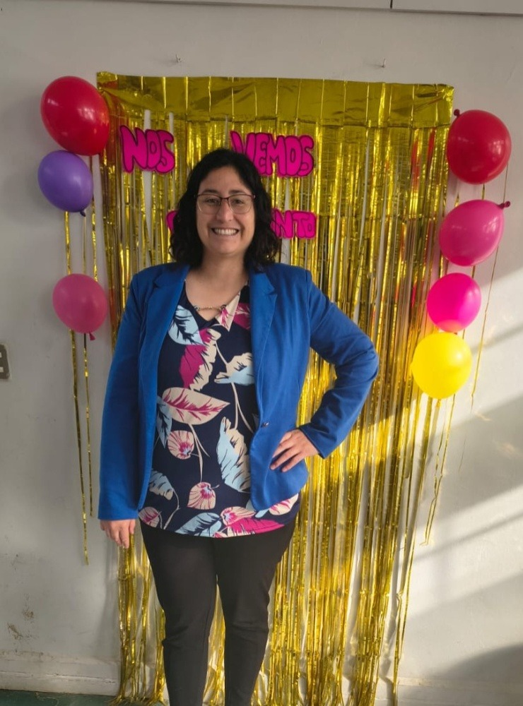

Conoce a la creadora 👩🏫
Soy Educadora Diferencial con amplia experiencia en inclusión educativa y trastornos del lenguaje. Me especializo en Innovación Curricular y Proyectos Educativos, con una fuerte orientación hacia el desarrollo de soluciones tecnológicas para el aula.
Creé la plataforma "Profe con Propósito" y esta aplicación, "Tren de Palabras", con un objetivo claro: facilitar el aprendizaje en todos los niños, especialmente aquellos con necesidades educativas especiales, respetando sus ritmos y su contexto.
Mi misión es construir una educación sostenible basada en innovación, inclusión y calidad pedagógica. ¡Gracias por subirte a este tren!